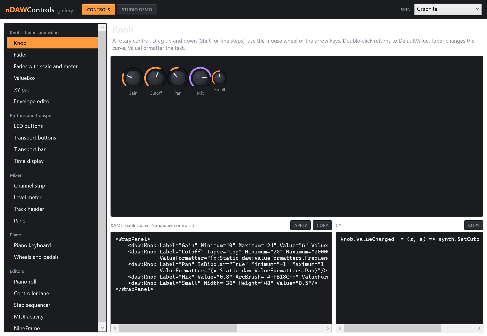

Getting started
From an empty WPF project to a skinned panel with a knob, a fader and a live meter in five minutes.
#Requirements
- Windows 10 or 11
- .NET 8 or .NET 10, WPF (
net8.0-windowsornet10.0-windows) - Any CPU. The native renderer is used in 64-bit (x64) processes; x86 and ARM64 processes draw the same frames as vectors.
- The Microsoft Visual C++ Redistributable (x64) for the native renderer. Most PCs already have it; without it the controls simply draw vectors.
#Install
Add the package from NuGet with the .NET CLI:
dotnet add package nDAWControlsOr in Visual Studio: right-click the project, Manage NuGet Packages, search for nDAWControls and install it. Or add the reference to your project file yourself:
<PackageReference Include="nDAWControls" Version="1.0.2" />The package brings NinePatchWpf and its native renderer (NinePatchLib.dll). There is nothing else to copy or set up.
#Add the namespace
Add the daw XML namespace to the root element of any window or user control:
<Window x:Class="MyApp.MainWindow"
xmlns="http://schemas.microsoft.com/winfx/2006/xaml/presentation"
xmlns:x="http://schemas.microsoft.com/winfx/2006/xaml"
xmlns:daw="urn:ndaw-controls">In C#, the controls are in the nDAWControls namespace, skins in nDAWControls.Skinning and the note and pattern models in nDAWControls.Models.
#Your first panel
A complete window with a knob, a fader with a meter, and mute and solo buttons. The window takes its colours from the skin, so it matches the controls:
<Window x:Class="MyApp.MainWindow"
xmlns="http://schemas.microsoft.com/winfx/2006/xaml/presentation"
xmlns:x="http://schemas.microsoft.com/winfx/2006/xaml"
xmlns:daw="urn:ndaw-controls"
Title="My synth" Width="420" Height="340"
Background="{DynamicResource {x:Static daw:DawSkinKeys.WindowBackground}}"
TextElement.Foreground="{DynamicResource {x:Static daw:DawSkinKeys.Text}}">
<daw:DawPanel Header="CHANNEL" Margin="12" CanHide="False">
<StackPanel Orientation="Horizontal" Margin="12">
<StackPanel>
<daw:Knob x:Name="cutoff" Label="Cutoff" Taper="Log" Minimum="20" Maximum="20000"
DefaultValue="1200" Value="1200"
ValueFormatter="{x:Static daw:ValueFormatters.Frequency}"/>
<daw:Knob Label="Pan" IsBipolar="True" Minimum="-1" Maximum="1"
ValueFormatter="{x:Static daw:ValueFormatters.Pan}"/>
</StackPanel>
<daw:Fader x:Name="volume" Height="220" Margin="16,0,0,0" Taper="Decibel"
Minimum="-60" Maximum="6" DefaultValue="0" MinimumText="-∞"
ValueFormatter="{x:Static daw:ValueFormatters.Decibel}"/>
<daw:LevelMeter x:Name="meter" Width="10" Height="200" Margin="6,0,0,0" VerticalAlignment="Top"/>
<StackPanel Margin="16,0,0,0">
<daw:LedToggleButton Role="Mute" Content="M" Width="32"/>
<daw:LedToggleButton Role="Solo" Content="S" Width="32" Margin="0,4,0,0"/>
</StackPanel>
</StackPanel>
</daw:DawPanel>
</Window>In the code-behind, react to the controls and feed the meter. Here a timer stands in for your audio engine:
using System.Windows;
using System.Windows.Threading;
using nDAWControls.Skinning;
namespace MyApp;
public partial class MainWindow : Window
{
private readonly DispatcherTimer _fake = new() { Interval = TimeSpan.FromMilliseconds(30) };
private readonly Random _rng = new();
public MainWindow()
{
InitializeComponent();
cutoff.ValueChanged += (s, e) => Title = $"Cutoff {e.NewValue:0} Hz";
// In a real app this is your audio callback, on the audio thread.
_fake.Tick += (s, e) =>
{
float peak = (float)(0.4 + _rng.NextDouble() * 0.5);
meter.PushLevels(peak, peak * 0.6f);
};
_fake.Start();
}
}#Pick a skin
Graphite is the default. Apply another skin once at start-up, for example in App.xaml.cs:
using System.Windows;
using nDAWControls.Skinning;
public partial class App : Application
{
protected override void OnStartup(StartupEventArgs e)
{
base.OnStartup(e);
SkinManager.Apply(DawSkin.Studio);
}
}You can call SkinManager.Apply again at any time, for example from a settings menu, and every control changes at once. See Skins for skins per panel and your own skins.
#Try the gallery
The gallery sample shows every control live next to its XAML and C#. You can edit the XAML, press Ctrl+Enter to see the change, and copy it into your app. Its second view is a studio demo with a mixer, a synth, a piano roll and a keyboard.
Download the ready-to-run gallery from the releases page, or run it from the source:
git clone https://github.com/duskozi/nDAWControls.git
cd nDAWControls
dotnet run --project samples/Gallery
#Next steps
- Core concepts: value controls, tapers, value text, models and drawing.
- Threading and real-time data: meters, MIDI lights and playheads from your engine.
- MVVM and binding: view-models, commands and undo.
- Recipes: a mixer, MIDI with DryWetMidi, audio meters with NAudio, a step sequencer engine.
- All controls.